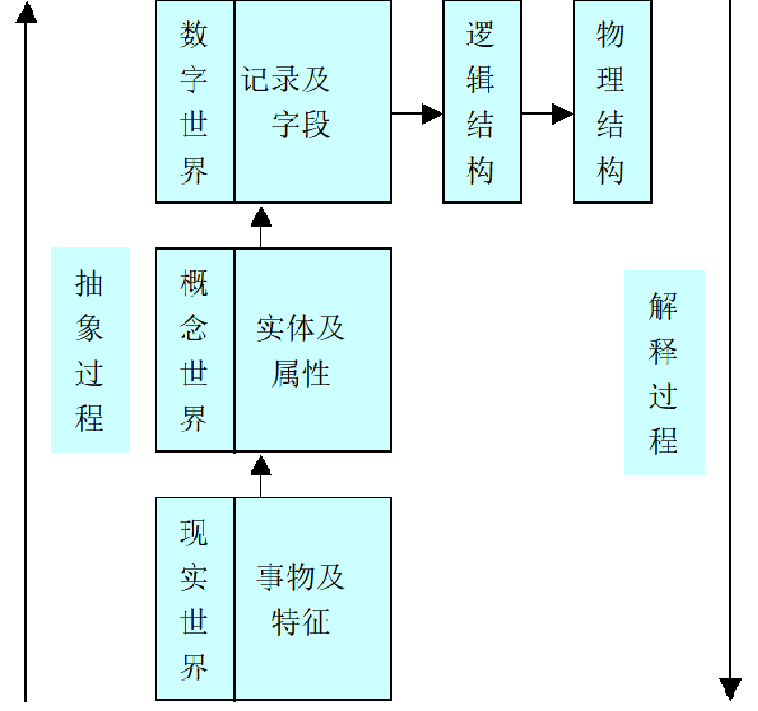

1.概念与理论基础
1.1数据和信息
信息：
早期：音信和消息；情报、资讯、消息；
科学定义：信息是用来消除随机不确定性的东西(香农—信息奠基人)
(钟义信)信息的概念：
本体论(客观论)的信息：事物（物质）的运动状态或变化方式
运动状态：空间上所展示的状态和态势
变化方式：时间上所展示的过程和规律
认识论(主体论)的信息：能够被主体所感知的事物（物质）的变化方式或运动状态
认识论的信息可分为：语法信息（主体能够反映并能够通过某种方式描述的信息，但不能理 解）、语义信息（主体能理解的信息）、语用信息（对主体有用的信息）
理解：信息对不同的人有不同的价值（用处）
数据：记载事物的属性和相关关系的物理符号；语法信息
信息：经过加工对人工有用的数据；狭义上是指语义信息和语用信息。
关键词：对主体有用、对主体新、事物运动的方式及状态
数据是信息的载体
1.2客观世界的三位一体观
世界观：世界是由物质构成；物质是不以人的意志为转移的客观存在；包括有形的事物和无形的场……
世界是由物质、能量、信息构成的。三位一体，物质和能量是基础，信息是灵魂和统帅。信息反映了物质和能量的运动方式和状态，掌握了信息，就掌握了物质和能量之间的相互转化。
1.3信息系统的概念
从功能来说：能进行信息的收集、传递、存储、加工、维护和使用的人机系统
从组成来说：是由硬件、软件、信息资源、信息用户和规章制度组成的以处理信息流为目的的人机一体化系统
1.4信息系统的分类
按照概念：原始信息系统、现代信息系统（基于计算机）
按照和组织的关系：组织信息系统、泛组织信息系统、家居信息系统、个人信息系统
……
1.5信息系统生命周期——过程抽象的方法，结构化的方法
和任何事物一样，信息系统有产生、发展和消亡的过程，周而复始，形成信息系统的生命周期。
是信息系统的时间属性。
- 系统规划——总体和长远安排
- 系统分析——逻辑模型（是什么）
- 系统设计——物理模型（怎么做）
- 系统实施——做
- 系统运行和维护——用
1.6信息的度量
衡量信息多少的量叫信息量。
香农通过信息的传递度量信息。
世界是由物质、能量、信息构成的。
量纲有奈特、哈特莱、比特
信息量的大小与信息所排除的随机不确定性的多少有关。跟消息的条目没有关系
我们传统认为客观世界是由物质和能量构成的，随着我们对信息的认识的深入，我们认为客观世界是由物质、能量和信息三位一体构成的，能量和信息之间可以互相转化，物质和能量是基础，没有物质和能量，也就不存在信息，信息反映了物质和能量的运动方式和状态，掌握了信息，就掌握了物质和能量之间的相互转化，就掌握了一切，所以说信息是居于灵魂和统帅的地位。
信息是可以度量的，衡量信息的多少的量叫信息量，在信息传递过程中度量信息。信息是客观存在的，信息不同于物质，不能用体积、重量来表示，也不用于能量，不能用焦耳来衡量，同样，物质和能量也不能用衡量信息的方式来度量，因此可以说，信息和物质、能量是不同的。
2.理论基础
叙述信息、系统、管理和人的理论，对开发信息系统的重要作用。
信息有客观性、等级性、时效性、共享性等属性，信息系统的核心组成和资源是信息，信息的属性决定了开发信息系统时对信息处理的要求，要保证信息的客观性、等级性、时效性和共享性等，如信息具有客观性，要求信息系统信息的处理及输出的信息是真实客观的，是对用户有用的；信息具有层次性，要求信息系统对于不同信息的要用不同的方式处理等等。同时，信息的多种属性也决定了信息系统的开发使用多样的技术、操作或功能来满足用户的要求。
系统是为同一目的得一些相互联系、影响、制约的要素组成的有一定功能与结构，并且与周围环境发生紧密联系的有机整体，系统可以分为若干子系统。任何事物都可以看成一个系统，世界是一个系统，是各种系统的有机组合；系统是由要素及其关系所组成的，核心要素状态决定了系统运行的方式、方法和方向；要素的组合和关系决定了系统，要素组合的多样性决定了系统的多样性。信息系统是一个系统，要用系统的观点理解指导并建设信息系统，利用系统的性质科学的建设信息系统。
管理是为了同一目标，一些人通过计划、组织、执行、指挥、协调另一些人的活动。为管理服务的信息系统，要满足各层次、各业务、各职能、各功能需要，将管理活动中的数据加工成不同人需要的信息，因此，只有理解管理的内容、流程及结构，才能开发一个优秀管理信息系统。
人作为信息处理者具有很多的限制、不足，同时作为信息接收者有很多的特点。人是信息系统中最重要的要素，也是最活跃的要素，只有理解了人的不足和特点，才能开发满足人需求的信息系统。
2.2信息的属性
- 客观性：是信息的第一的、本质的属性，要求信息系统开发对数据的处理是真实的，对用户有用的
- 等级性、层次性：又称信息的层次性，是指信息是分层次的或有等级的。管理是分层次的，对于不同的层次的信息有不同的处理；密级分等级的
- 时效性——信息是变化的，又称新颖性，是指信息是具有新内容的东西。信息新度越小越好
- 共享性——非零和性、信息时可以共享的
- 可转换性——信息可以转换为价值的属性
- 可变换性——信息可以以不同的形式表现,因此,信息的载体具有可变换性。
- 增值性——过期的信息可以产生具有新价值的信息。
- 可扩散性——信息可以从一个地方传输到其他若干个地方。信息富于渗透力,力图冲破保密的非自然束缚。
- 可传递性——信息可借助一定的载体进行传递，使人们感知并接受，其传递过程包括三个因素，信源、信道、信宿
- 不完全性——信息不完全性主要是指人们由于外在环境的复杂性和不确定性,所掌握的信息不可能无所不包.同时,由于人的理性有限,人们通过所掌握的信息也不可能预见一切。
- 可压缩性——信息是可压缩的，在允许较小损失的情况下可以通过较少的系数表达出来
2.3系统
系统的定义
系统的分类
系统的性质
- 目的性
- 整体性：局部之和大于整体是系统的整体性属性
- 结构性（相关性）
- 边界性
- 层次性
- 适应性
- 动态性
系统观
人处理数据的特点：信息过载——过载点
- 信息承受能力
- 接受和响应信息质、量的差异
- 过载点：响应输入时的饱和点；准确响应输入的信息量的临界点
人作为信息处理者的限制有：短期存储器的限制；检出差别的限制；处理概率数据的限制
人作为信息接受者的特点：人需要“无用”的信息；人需要反馈和信息压缩；
三个世界和三个空间
- 信息系统开发是一个从现实世界到概念世界再到数字世界的抽象的过程；信息系统开发是一个
三个世界融合的过程；融合是现实也是趋势 - 
- 环境空间：问题的客观存在或任务的客观条件之和。
- 问题空间：对问题处理的描述——解决问题的方法总和。
- 解空间：解决问题并形成的成果的总和。
- 人的处理过程（搜索过程）：环境空间 →按价值观或者条件对搜索“问题空间” →解空间（决策）
- 信息系统建设也是从环境空间到问题空间再到解空间的过程。
错题汇总：
响应输入时的饱和点是过载点
信息的等级性由以下几方面因素决定：信息的密级是不同的；信息的精度是不同的；管理是分层次的
管理的职能包括计划、控制、指挥、协调、组织
管理系统的三要素：信息系统、管理对象、管理机构系统
信息系统开发的主要方法有CASE方法、结构化方法、原型化方法、面向对象方法；面向过程的方法学是过程抽象的，面向对象的方法学对抽象抽象的。
判断：系统是有目的性的（x）——人工系统是由目的性的
人类社会活动分为生产活动和管理活动
信息第一本质的属性是客观性